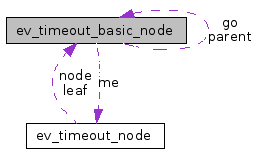

ev_timeout_basic_node Struct Reference
#include <events.h>
Collaboration diagram for ev_timeout_basic_node:

[legend]
Detailed Description
timeouts events management node
The documentation for this struct was generated from the following file:
Generated on Mon Nov 24 14:36:33 2008 for events by
 1.5.1
1.5.1